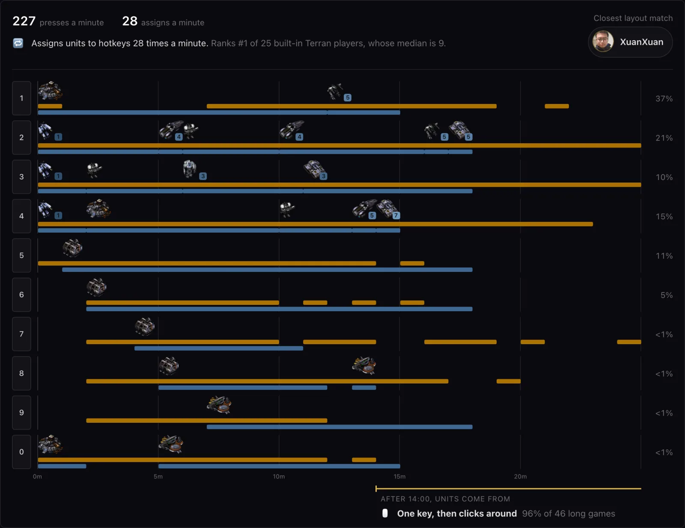
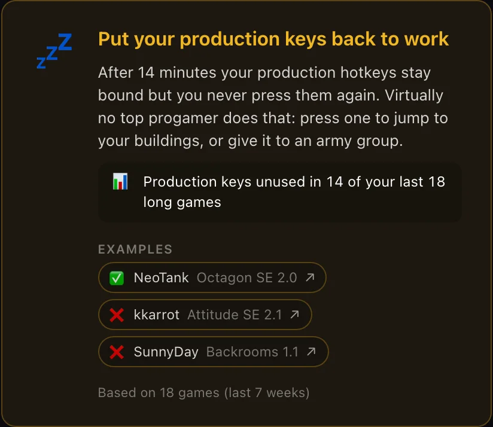

screpdb research
How progamers keep making units when they run out of hotkeys
Eight Barracks, ten keys. I read about 19,000 ladder games to see what progamers do about it, and found six habits. Which one is yours?
zimp's review of screpdb on TL.net got me staring at hotkey reports. One thing kept showing up: around the middle of the game, strong players' Barracks keys go quiet. So I went and checked why.
Three ways it could go
Early on, almost everyone puts production on keys: press 4, train, press 5, train. Then you have 8 Barracks and only 10 keys, and something has to give.
What the replays say
- Terran and Protoss do switch. Of the advanced players who made their army from keys early, only 3 to 22% still do after 14:00.
- Buildings decide it. At 8 or more Terran production buildings, nobody keeps it up.
- The army takes the key afterwards. A key goes to the army about a minute after it went quiet, so needing army keys isn't why players stop.
- Zerg never switch. Terran and Protoss build their production together in one spot. Zerg production comes from Hatcheries, which sit next to minerals all over the map, so a key per Hatchery stays the quickest way. 92% of pro Zerg games still make their army from keys late.
The data. About 19,000 ladder games of 12 minutes or more: players at 1800 MMR and up, and a sample below 1800 MMR.
Six habits
Once the game goes long, each player settles into one of these:
Who does what
Some of the best-known progamers in screpdb. Each one sticks to their habit: split a pro's games in two at random and both halves land on the same habit for 23 of 31 Terrans, 15 of 16 Protoss and every Zerg.
Does it matter?
The data says no habit wins more games. But everyone plays opponents of their own level, so that hides a lot. Having a habit clearly goes with level:
A few things to take from it:
- Put production on keys. Below 1800 MMR, about a third of long Terran games have no production key at 12:00.
- Keeping them late is fine. At the same number of buildings, games still made from keys produced 9 to 21% more units per building.
- Don't leave keys unused. Virtually none of the top progamers keeps production keys bound and never presses them. Press one to jump to your buildings, or give it to the army.
- Pick one habit and stick to it. It barely matters which.
Now in screpdb
Every built-in player's Hotkeys tab now says how they make units after 14:00, right under their hotkey timeline.

If your long games have no fixed way, or your production keys sit unused, screpdb's insights will tell you:

Out now in screpdb v2.6.0
Free, open source, and it runs on your own computer. Insights are still in beta, so I need your help: if one gets you wrong, tell me.